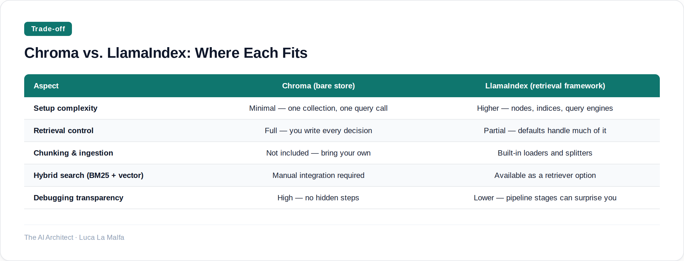

Choosing between a bare embedding database and a full retrieval framework shapes everything downstream — here is how to think about that trade-off.
September 19, 2026
There are two numbers I keep in my head when a client asks about semantic search: how many documents they have, and how much retrieval logic they expect to change. Those two numbers almost always determine which path to take. Below roughly 500k chunks with stable retrieval logic, a lightweight embedding database does the job cleanly. Above that threshold — or when the retrieval strategy itself is still evolving — a higher-level framework starts paying for its overhead.
The framing I see most often in the wild is wrong: people treat this as a question of scale alone. It is really a question of who owns the retrieval logic. A bare vector store gives you a container for embeddings and a similarity function. A retrieval framework gives you a retrieval pipeline — chunking strategies, re-ranking, query rewriting, hybrid search, metadata filtering — all wired together. Neither is universally better. They are solving slightly different problems, and conflating them leads to either over-engineered toy projects or under-engineered production systems.
Option A
chroma-core/chroma — Embedding database and search infrastructure for AI applications.
Chroma's API is honest about what it is: put vectors in, get ranked vectors out, apply a metadata filter if you need one. That honesty is its strength and its ceiling. The moment you need to chunk PDFs intelligently, run a BM25 pass before the vector pass, or rewrite ambiguous queries before embedding them, you are writing that infrastructure yourself. For a contained project — a single document corpus, a known embedding model, a team that wants to own every line — that is fine. For anything where the retrieval strategy is still being discovered, you will end up reinventing wheels that already exist elsewhere.
LlamaIndex takes the opposite bet. It assumes retrieval is a pipeline, not a lookup, and it structures everything accordingly. The cost is real: more concepts to internalize, more configuration surface, more places for something to behave unexpectedly. I have debugged LlamaIndex pipelines where the default chunking strategy silently dropped the last sentence of every document — not a showstopper, but exactly the kind of invisible behaviour a bare vector store cannot hide from you because it has no chunking opinion at all. The abstraction earns its keep only when you are actually using the layers it provides.

Option B
run-llama/llama_index — Indexing and retrieval framework built on top of embeddings.
Inspired by Gemini Live audio (Simon Willison)